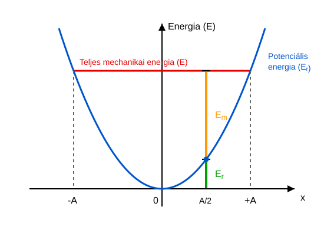

Egy
rugóállandójú rugó egyik vége rögzített egy vízszintes, súrlódásmentes
asztalon. A rugó másik végén egy
tömegű test rezgőmozgást végez
amplitúdóval. * Mekkora a körfrekvencia? * Mekkora a rugó rugalmas
energiája a maximális kitérés esetében? * Mekkora a test maximális
sebességének nagysága? * Mekkora a test legnagyobb mozgási energiája? *
Számítsuk ki a kitérést és a sebesség előjeles értékét
-kor!
A test a
helyzetből indul. * Számítsuk ki a mozgási és a helyzeti energia
összegét ugyanebben az időpillanatban!
A rugalmas energia a szélső helyzetben maximális, amikor a kitérés
egyenlő az amplitúdóval, tehát a maximális kitéréssel.
A sebesség maximális értéke a körmozgás analógiája alapján – ahol a
sugár az amplitúdó – a következő:
A maximális mozgási energia tehát:
Számítsuk ki a kitérést és a sebességet
-kor!
Számítsuk ki a teljes mechanikai energiát is!
Láthatjuk, hogy a teljes energia mindig
,
függetlenül a test kitérésétől vagy az időtől.
Legyen egy derékszögű háromszög két befogója
és
,
az átfogója pedig
!
Ekkor a Pitagorasz-tétel a következő:
Tudjuk, hogy a trigonometrikus függvények definíciója a derékszögű
háromszögben a következő:
Ezeket behelyettesítve az előző összefüggésbe, megkapjuk a
Pitagorasz-tétel szögfüggvényekkel kifejezett alakját:
A harmonikus
rezgőmozgás mechanikai energiája
Határozzuk meg most az eddig vizsgált veszteségmentes esetben a
harmonikus rezgőmozgást végző test mechanikai energiáját, tehát a
mozgási energia és a rugalmas helyzeti energia összegét! Ehhez már
minden összefüggést ismerünk.
Ismerjük a harmonikus rezgőmozgás kitérésének és sebességének
kiszámítását is:
Ezeket az összefüggéseket behelyettesítjük, és elvégezzük az algebrai
műveleteket:
Most tekintetbe vesszük az
kiszámítására szolgáló összefüggést:
Ezt is helyettesítsük be!
A Pitagorasz-tétel trigonometrikus alakját felhasználva láthatjuk,
hogy az energia állandó a harmonikus rezgőmozgás során!
Itt felhasználtuk újra a
és a
összefüggéseket.
A harmonikus rezgőmozgás energiája időben állandó, feltéve,
hogy nincsenek veszteségek, mint például súrlódás vagy közegellenállás.
Az összenergia az amplitúdó négyzetével arányos.
A
harmonikus rezgőmozgás potenciálisenergia-függvénye
Ábrázoljuk grafikonon a rugóra kötött test potenciális energiáját a
kitérés függvényében! Egy parabola alakú görbét kapunk. Ha behúzzuk az
állandó energiának megfelelő vízszintes egyenest, ez metszi a parabolát,
méghozzá az
pontokban. Mivel a mozgási energia nem válhat negatívvá, ezért a test
csak e két pont között helyezkedhet el. A nem negatív mozgási energia és
a potenciális energia összege minden pontban az összenergiát adja.

Harmonikus rezgőmozgás potenciális
energia függvénye
Példa
Határozzuk meg az előző példában rezgő test potenciális energiáját és
mozgási energiáját az
pontokban, tehát
esetén!
Láttuk, hogy a teljes energia
.
Ha a kitérés nagysága a fél amplitúdó, akkor a potenciális energia a
teljes energia negyede, tehát
,
a mozgási energia pedig
.
Feladatok
Egy harmonikus rezgőmozgást végző test teljes mechanikai energiája
.
A rugóállandó
.
Határozd meg a rezgés amplitúdóját!
Egy
tömegű test harmonikus rezgőmozgást végez. Amikor a test kitérése
,
a sebessége
.
A rezgés körfrekvenciája
.
Határozd meg a test teljes mechanikai energiáját és az amplitúdót!
Melyik kitérési pontban (az amplitúdó függvényében kifejezve) lesz a
harmonikus rezgőmozgást végző test mozgási energiája pontosan egyenlő a
rugalmas potenciális energiájával?